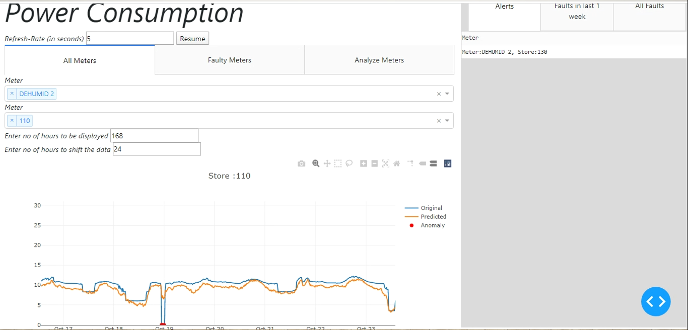

Anomaly detection in Power Consumption

What is it about?
Offices, Industries and showrooms consume a tremendous amount of power daily. Due to variation in the load requirements or in the power supply, there are significant variations in the required vs actual power consumption. Such fluctuations may lead to power breakdown, which may result in a power cut or a short circuit leading to a considerable power loss. In either case, it creates a massive impact on the functioning of the industry and can result in substantial financial losses. In this project, we aim to detect any abnormal power flow and raise an alert in case of significant variation in power consumption.
How it works?
The live and interactive user interface is designed using Dash-plotly. The parameters used to predict power consumption are passed as input parameters to the model. The model predicts the power consumption and returns a graph along with anomalies if any. Current faults, previous faults, and all faults displayed on the user interface. There is also an option to visualize the graphs along with input parameters to understand the cause of faults.
How we made it?
The model was created using an unsupervised learning technique. We were provided with a dataset containing temperature and dewpoint for indoors and outdoors, Day of the Week, Hour of Day, Meter Name, Store Number and Actual Power Consumption in kWh. First, we performed Exploratory Data Analysis to understand the data. Time series analysis was done and the series was decomposed to study the patterns. The findings were that the data does not follow any significant seasonal or trend component. Thus it was decided to switch to Artificial Neural Networks as the time series did not give any significant results. For ANN, we encoded Day of Week and Hour of the Day using one-hot encoding as they don't have any nominal relationship. The dataset contains 97568 records in total for Dehumidifier Meter across 6 different stores. Data was cleaned by removing the values which are either 0 or lies above Mean + 2 * Standard Deviation. Data was shuffled to take the samples from the complete dataset. Data was then split into Training Set 80%, Validation Set 10%, Testing Set 10%. Then an ANN model was trained using Power Consumption as the Output Variable. We trained a single hidden layer model with a linear output layer. Adam optimizer was used with Mean Squared Error as the cost Function and a batch-size of 32. Early stopping was used to avoid overfitting. The front-end was designed using Dash-plotly, where the model results are displayed in the form of Graphs. Actual value lying outside 95% Confidence interval of predicted value was categorized as an anomaly.
Team
This project was designed during my Summer Internship at Walmart Labs in 2020, along with Ritish Menon and Mainak Mitra.